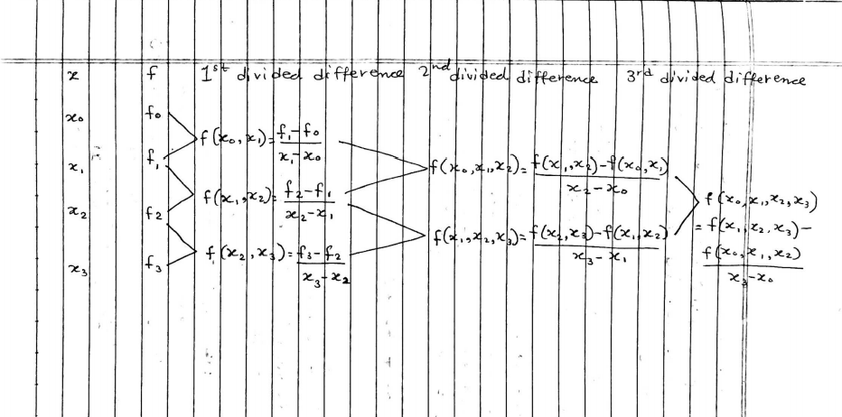

The points when the result changes the sign are the roots (a,b)
We use the formula x=2(a+b)
We fill the table
Step
a
b
x=2(a+b)
f(x)
In each step we check f(x)=+veorf(x)=−veif(f(x)=+ve)thenputb=xinnextstepif(f(x)=−ve)thenputa=xinnextstep
Repeat the step 5 and 6 till we get repeating value of x, which is the required root of the function
False point / Regular-Falsi/ Position Method
Formula
Given f(x)
We run it by 0,1,2,… => f(0),f(1),f(2),…
We find out f(a) and f(b)
We use the formula x=f(b)−f(a)a∗f(b)−b∗f(a)
We fill the table
Step
a
b
f(a)
f(b)
x=f(b)−f(a)a∗f(b)−b∗f(a)
f(x)
In each step we check f(x)=+veorf(x)=−veif(f(x)=+ve)thenputb=xinnextstepif(f(x)=−ve)thenputa=xinnextstep
Repeat the step 5 and 6 till we get repeating value of x, which is the required root of the function
Newtons Raphson Method
Formula
Given f(x)
Find f’(x)
We run it by 0,1,2,… => f(0), f(1), f(2),…
Root lies between (a,b) i.e the points where the sign changes
Put x0 = a
We use the formula xn+1=xn−f′(xn)f(xn)
We fill the table
n
xn
f(xn)
f’(xn)
xn+1=xn−f′(xn)f(xn)
Fill the table till the value of xn+1 repeats
Limitation
If f’(xn) is 0, then divisible by 0 occurs which cannot give the solution
If the initail guess is not a good guess, i.e too far from exact root then the process may converge to a garbage root.
Secant/ Chord Method
Formula
Given f(x)
we run it by 0,1,2,3,… => f(0),f(1),f(2),f(3),…
The points when the result changes the sign are the roots (a,b)
We take x0 = a and x1 = b
We then use formula x2=f(x1)−f(x0)f(x1)∗x0−f(x0)∗x1OnGeneralxn+1=f(xn)−f(xn−1)f(xn)∗xn−1−f(xn−1)∗xn
Now fill the table
n
xn
xn−1
f(xn)
f(xn−1)
xn+1
Iterate until xn+1 repeats
Linear Lagrange’s Polynomial Formula
Formula
Given x0,x1,x2,x3,... for f0,f1,f2,f3,....
We use the formula if(tillx1given)P1(x)=L0f0+L1f1Where−−L0=(x0−x1)(x−x1)−−−−−−L1=(x1−x0)(x−x0)−−−if(tillx2given)P2(x)=L0f0+L1f1+L2f2Where−−L0=(x0−x1)(x0−x2)(x−x1)(x−x2)−−−−−−L1=(x1−x0)(x1−x2)(x−x0)(x−x2)−−−−L2=(x2−x0)(x2−x1)(x−x0)(x−x1)−−−if(tillx3given)P3(x)=L0f0+L1f1+L2f2+L3f3Where−−L0=(x0−x1)(x0−x2)(x0−x3)(x−x1)(x−x2)(x−x3)−−−−−−L1=(x1−x0)(x1−x2)(x1−x3)(x−x0)(x−x2)(x−x3)−−−−L2=(x2−x0)(x2−x1)(x2−x3)(x−x0)(x−x1)(x−x3)−−−−L3=(x3−x0)(x3−x1)(x3−x2)(x−x0)(x−x1)(x−x2)−−−Soon......
Lagranges Interpolation with divided difference
Formula
Given table
x
x0
x1
x2
…
xn
f
f0
f1
f2
…
fn
Find the values as shown in the figure

Then we use formulas P1(x)=f0+(x−x0)∗f(x0,x1)−−−−P2(x)=f0+(x−x0)∗f(x0,x1)+(x−x0)∗(x−x1)∗f(x0,x1,x2)−−−P3(x)=p2+(x−x0)∗(x−x1)∗(x−x2)∗f(x0,x1,x2,x3)soon.....
Then we use formulas P1(x)=f0+r∗Δf0−−−−P2(x)=f0+r∗Δf0+2!1∗r(r−1)∗Δ2f0−−−P3(x)=p2+3!1∗r(r−1)(r−2)∗Δ3f0soon.....−−−Wherer=hx−x0[x=requiredvalue,x0=initialvalue,h=stepsize]
Then we use formulas P1(x)=f0+r∗∇f0−−−−P2(x)=f0+r∗∇f0+2!1∗r(r−1)∗∇2f0−−−P3(x)=p2+3!1∗r(r−1)(r−2)∗∇3f0soon.....−−−Wherer=hx−xn[x=requiredvalue,x0=initialvalue,h=stepsize]
Curve fitting (Least square method)
Formula
Given function f(x)
Given table
x
x1
x2
x3
…
xn
y
y1
y2
y3
…
yn
Convert the given function f(x) into form of y = a + bx [Mostly by taking loge on both side of f(x)]
We then find ∑x,∑y,∑xy,∑x2 using the given table
Construct the normal equation of constant a and b as ∑y=na+b∑x−−−−i−−−−∑xy=a∑x+b∑x2−−−ii
Solve equation i and ii and find value of a and b
Finally substitue the value of a and b in the equation y = a + bx
Trapezoidal Rule
Formula
I=∫abf(x)dx=h[2y0+yn+y1+y2+...+yn−1]
Where h=nb−a and n = no. of intervals
y0=f(x0),y1=f(x1),etc and x0=a,x1=a+h,x2=a+2h,etc